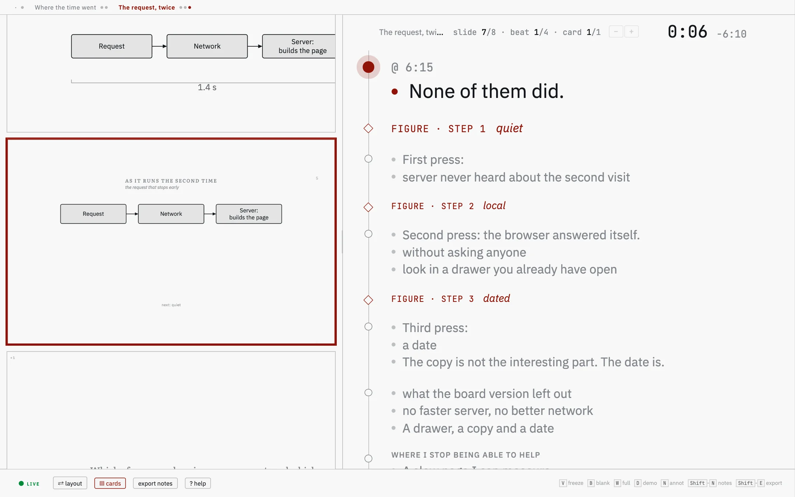
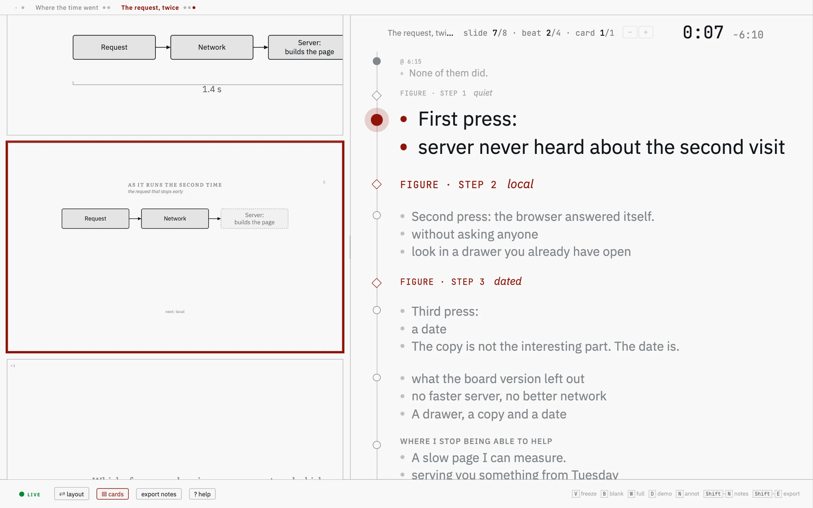
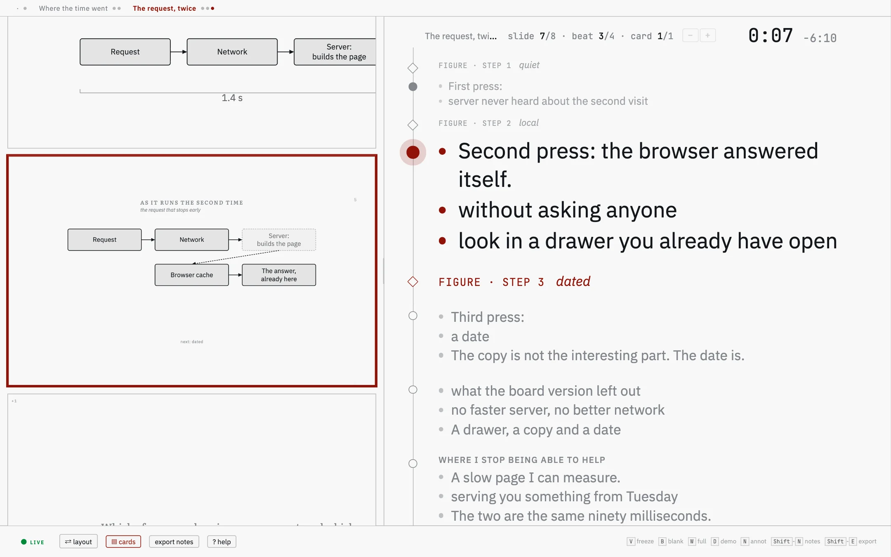
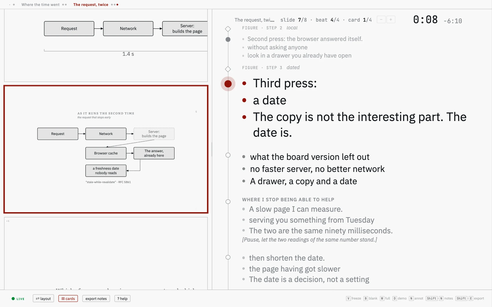
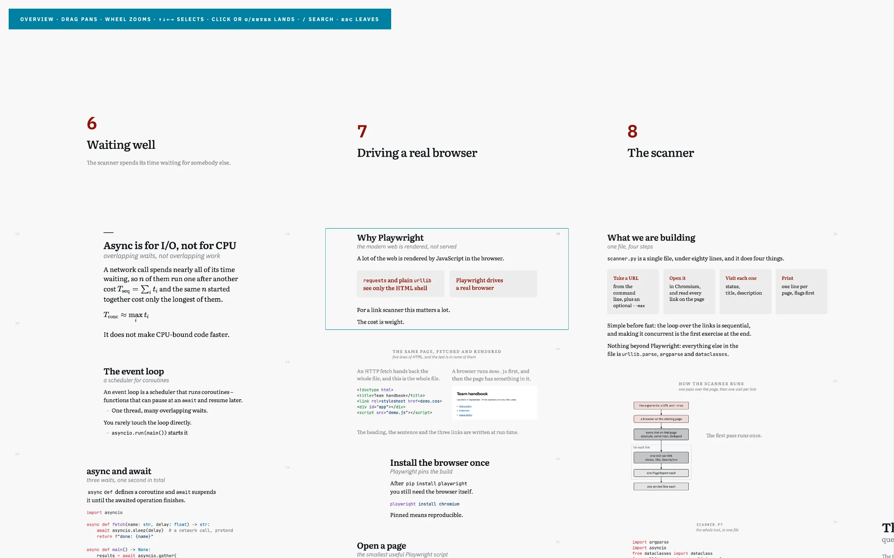
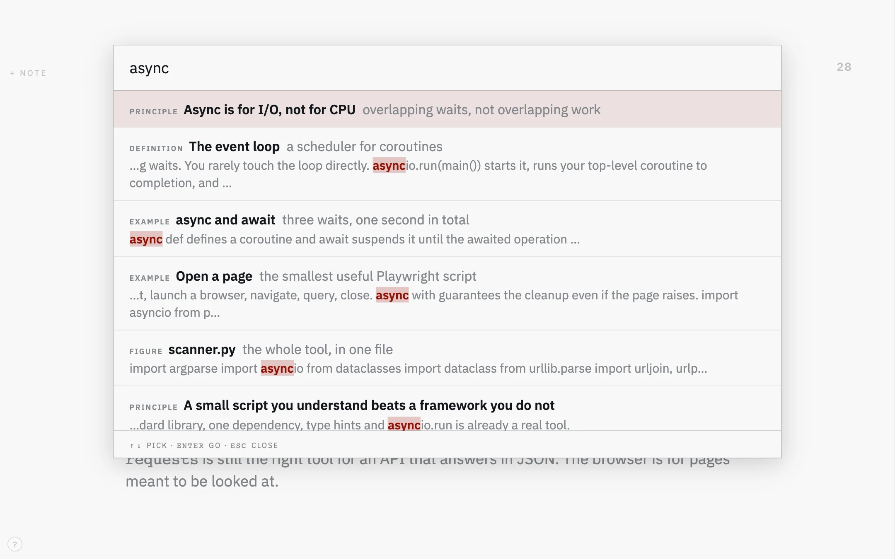
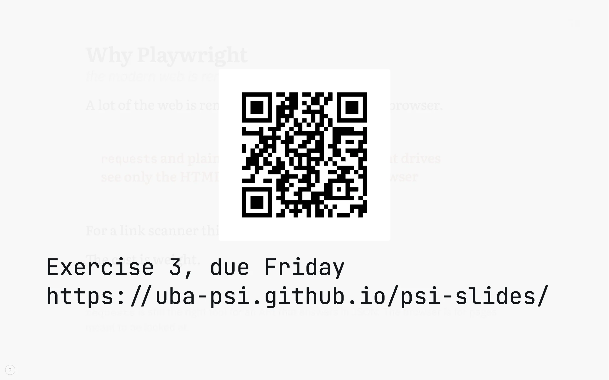
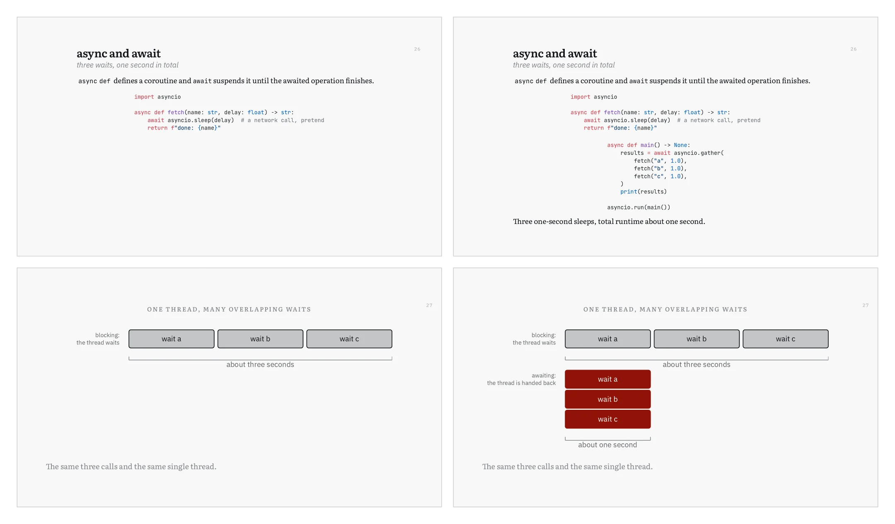

psi-slides · back to the front page · Diese Seite auf Deutsch
In the room
The lecture is running, the room is full, and what is on the wall is the file you built this morning. This page follows the hour from behind the laptop: what happens, and what you press when it does.
This page is about which key to reach for, and when. The full list of keys is in the lecture itself: press ? and it opens, grouped by task, with the mouse gestures beside the keys. Cmd-K opens the same list ready to type a search, and Enter runs the row you found.
The two windows need no server and no network. They find each other in the browser; the timer, your notes, where you are in the lecture and anything you type stay on the machine you are standing at. A lecture on a memory stick, in a room with no wifi, behaves the same way. Two things on this page go online, and only if you choose them: a YouTube or Vimeo video embedded in a slide, and the prompter.
Two windows
The projection goes on the wall. Press S and the cockpit opens in a second window: your own view, which stays on the laptop and which the room does not see. Move through the lecture in either window and the other follows.
Before the talk starts, the projection carries a small start menu: Fullscreen, Speaker cockpit and Print view, each with its key, so the first three things you do need no key list. It opens by itself only before the talk starts and goes away with the first press; ‹ puts it away earlier, and a › beside the ? circle opens it again. W makes the projection fullscreen. The browser grants that only to a click in the window itself, so the projection asks for one click; Esc leaves.

Your note for this slide stands under the mirror of the
projection, at a size you set with the two buttons in its corner. It arrives
filled from the > note: lines in the source;
Shift-N
lets you rewrite it during the talk, for yourself only.
What is coming stands in the strip along the edge: the next slides, fully revealed, so you can see where one lands before you get there. Drag its edge to make it bigger; drag it to the right edge of the window if you would rather have it as a column.
The clock sits over the corner of the mirror, large enough to read without leaning in. It counts from the moment the window opened; click it when the talk begins and it starts again at zero. There is no pause.
One press at a time
A lecture moves in steps rather than in slides. Press Space to take the slide one step further; only when nothing is left on this one does the press go on to the next slide. You move by whole slides with the arrow keys, by part of the lecture with Shift and an arrow.
Where the steps come from
A line that is exactly three dashes, on its own, opens a step. What comes after it waits until you ask for it, and what the room has already seen stays where it was.
A drawing counts too: a figure written with steps runs them on the same key, and a step inside a column, a card or a row arrives in the order it stands in the file.
## example: The handshake | four messages {.wide #tls}
**It opens with a client hello.** The client
names the versions and the ciphers it can speak.
---
**The server answers with a certificate.** Which is
where the rest of the hour is going to be spent.
> note: Ask who has ever looked at one of these.With C you swap the short slide for the whole text. What the room normally sees is the first sentence of each paragraph plus the phrases you set in bold – the rest of the prose is in the handout. Press it when a question needs the sentence you left out, and press it again to go back. Both windows follow.
On # you decide what happens to a slide that is too big for the frame. Three states, one press after the other: fill the frame, shrink only when the slide would otherwise run off it, or leave it alone at the size you chose. +, - and 0 are the manual version, for the row at the back.
The other cockpit, for a talk you have written out
Press K in the cockpit when you give a talk from a script. The projection moves into a small strip on the left and your notes become cards down a rail on the right. The cockpit stays that way until you press K again, and Space now moves from card to card: only the press on the last card of a step moves the projection on.
Below are four presses on one slide, one picture each. That
slide carries a drawing with steps of its own, and three of its cards name
the press they belong to, with
> note: from 1, from 2 and from 3:
a drawing’s steps have no three-dash line between them for a note to
stand after.
as the slide arrives

The card being said stands large. Below it, in grey, the cards still to come; between them the diamonds, one per click of the projector.
one press

The card above has gone grey, the press has reached the projector, and a box on the drawing has faded out.
two

The next card, and the two boxes it is about have arrived on the drawing. One press moved both.
three

The last of the cards pinned to a step. What has been said stands above the cursor, what is left stands below it.
A paragraph in a note becomes a card, and its bold phrases become
its bullets. Bold the words you want to see, not the ones you want to
stress. A paragraph with no bold shows whole, in smaller type, and a
#### heading above one gives the card a title.
Where the note stands decides when it is said. A note written above the first three-dash line belongs to the step the slide opens on, a note under it to the step that line opens. Nothing has to be pinned by hand. One exception: when every note of a slide stands at its end, after the last three-dash line, they all show on the first step.
@12:30 at the start of a card marks when you
meant to reach it. The cockpit then shows beside the clock how far off that
is, rounded to ten seconds and red when you are behind. A lecture with no
such marks shows nothing there.
A prompter, if you switch one on
Switched on, the prompter listens while you talk and puts a short hint on the cockpit’s copy of the slide when something needs saying.
It is off unless you start it on the command line, with
node build.js and --watch --prompter;
the desktop app cannot run it. It sends a transcript of what it hears to a language model
over the internet, so it needs a network connection and an OpenRouter key,
and each call costs money. The microphone hears the whole room.
In the picture, the red strip carries the model’s answer to a number the speaker got wrong. The prompter’s own page says what it speaks up about, what it costs, what leaves your computer, and how to rehearse with it.

A question about slide forty
Somebody asks about something you said half an hour ago. There are two ways back to it, and Esc in either leaves you where you were.
With O you lay the whole lecture out as a board, in both windows at once, so the room searches with you rather than watching you scroll. The search on / opens only in the window you press it in; press it in the cockpit and the room sees nothing until you pick a hit. If someone asks for slide 23, G, the digits from the corner of the slide and Enter land there.


When the slide is not the point
Half of presenting is taking attention off the wall and putting it back. Three keys and one mouse gesture do that, and none of them changes where you are in the lecture.
Freeze the projection with V. The wall keeps the slide it has while you go looking somewhere else – three slides ahead, into a detail you folded away, wherever the answer is. Press it again and the room comes to where you are now, in one step.
The cockpit’s footer says live or frozen, and clicking that word does the same thing as the key.
You blank the projection with B. The wall goes dark and the room looks at you instead. It works while the projection is frozen too.
The laser has no key. Move the mouse over the mirror in the cockpit and a dot appears in the same place on the wall – you point at the slide on your own screen, at the size it is on yours, and the room sees where.
For a live demo on the projection, press D. Pick a window or a screen of your machine and it fills the frame until you press D again – so the terminal you are typing in can be on the wall without mirroring your displays and losing your window positions on the way back.
On a Mac the first capture fails while macOS is still asking for the screen-recording permission, and a second press of D then works. Worth doing once before the talk rather than finding out in front of the room.
Writing on the slide
Press N and a box fills the frame; what you type appears on the wall as you type it. One word stands large and centred, several lines as a block, ASCII art keeps its columns.
Type an address into it and a QR code appears above the words, drawn in the page: the room can take the link with a phone instead of copying it down.

A link in a lecture does not open a page. It puts the address on both screens with its own QR code, drawn when the lecture was built, and you go on. Nothing loads, and the tab you had open with your mail in it stays where it was.
A video plays in the frame, from the file itself, with
the two windows kept in step on play, pause and position. A YouTube or Vimeo
video embedded in a slide loads from YouTube or Vimeo, the one thing on the
wall that comes from another company’s server. A YouTube video
needs the lecture opened through --serve, which delivers it
from your own computer; a Vimeo video also plays when you open the file
directly.
What you wrote in the room goes back into the source
What you typed on the wall with N is kept in the
browser as a draft, per lecture, and two steps move it into
source.md, under the slide it was written on. It is worth
keeping: what you wrote down in the room is usually what the slide was
missing.
Two steps, after the hour
Press Shift-E in the cockpit and everything you typed on the wall goes to the clipboard as one marked block; the cockpit then asks before clearing the drafts. Say no and they stay, so a blocked clipboard never costs you the text.
Paste the block at the end of source.md and run
the build once. Each piece moves under the slide it was written on and the
markers go; anything it could not place is left at the end for you.
# what Shift-E puts on the clipboard, pasted at the end of source.md
<!-- annotations:start -->
### why-playwright
> annot: The ninety-second demo lands better than the paragraph.
### async-await
> annot: Ask who has hit this in a real script.
<!-- annotations:end -->
# then, once
node build.js lectures/my-lecture/source.md --integrate-annotationsWithout your own laptop
Sometimes you present on a computer that is not yours
– the PC built into the lectern, one laptop for a whole conference
session – or the organiser accepts slides only as a PDF upload. For
those cases, and for sending the slides to someone afterwards, the build
writes the projection out as slides.pdf, one page per press
of Space.
A step after a three-dash line and a step of a drawing each become the next page, as in the four pages here. A slide taller than the frame, which the live view pans down, is scaled to fit its page; a video becomes a still of its first frame, a YouTube or Vimeo video a card with the provider's name, the address beneath it. The cockpit and your notes are not in the file.
On the command line it is
--slides-pdf, which needs a Chromium: the one
npm install normally provides, else $PSI_CHROME or
a system Chrome. The app needs none of that, because it prints with its own
Chromium. And --print-pdf and
--print-notes-pdf write the two handouts as A4
PDFs. In the app all three are under Export as PDF….

Where to read further
- What psi-slides is The front page: one lecture as the room sees it and as the reader gets it, and why those are the same file.
- Getting started The app and the command line, and how to build the tutorial from a machine with nothing installed on it.
- The tutorial lecture A lecture about writing lectures. Open it, press S, and the keys on this page are under your hands.
- Figures you write The case for the figure language, then the manual: one figure built a line at a time, and every statement.